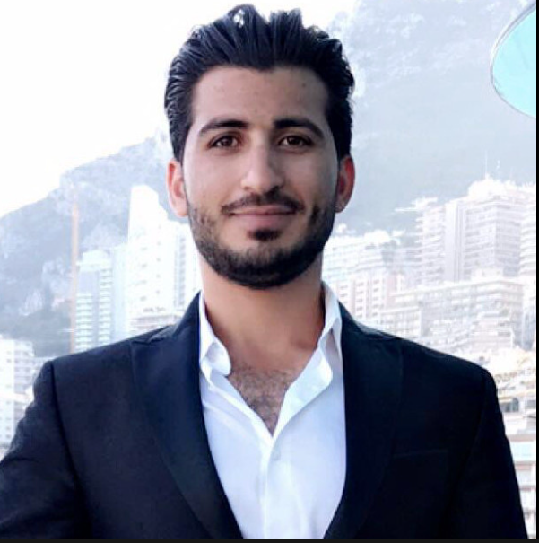

Alan Murad
professional summary:
Experienced executive coordinator, and transportation operation manager with 6+ years of experience in planning and scheduling events and meetings,
coordinating and communicating messages while maintaining excellent customer service. Self-thought skillful software engineering and vast experience
with web development and IT management.
Education
- Currently studying software engineering - Expected graduation time December 202.
Work experience
Operation Manager (Full time)
- Manage inbound and outbound calls to arrange transportation for established and new customers
- Dispatch rides and schedule reservations to 5 drivers and one transportation company
- Create accounts for drivers, follow and track their trips progress and activities.
- Deal with customers' feedback and challenges to ensure meeting their satisfaction with maintaining good customer service.
- Manage fleet and payment work for drivers.
- Executive assistance (Full time)
Azku Inc. Houston TX Jan- 2015 - Jun 2018
- Acted as a focal point to communicate key messages among executives, employees, and other external partners by email or phone in a timely manner.
- Set up meetings per the calendar and executive management request.
- Took minutes of the meetings and shared with the participants and the employees.
- Made travel and accommodation arrangements.
- Travelled to the Middle East to provide translations from/to Arabic, Kurdish, and English.
- Translated documents from Arabic/Kurdish to English and English to Arabic/Kurdish
- Wrote daily reports to each executive.
Skills
- Trilingual ( English, Arabic, Kurdish)
- Strong verable and written communication skills
- Adadtive mainset
- resercher and learner
- Advanced in HTML, CCS, Javascript, Python and SQL
Awards
- full stack development certification
- Project managment certification
